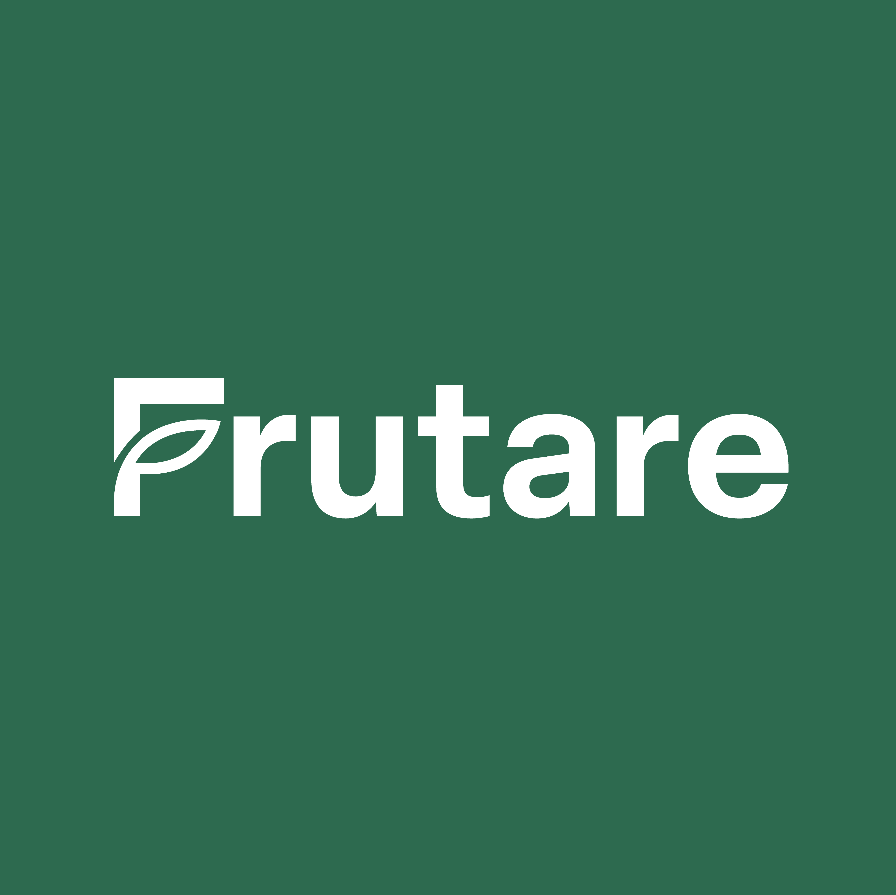

O que o produtor pensa
Questionário de validação de produto com os clientes atuais.
Prototipação de Produtos e Serviços, 2026
- BERNARDO FERREIRA
- GABRIEL MARQUES
- LUCAS SCHAEDLER
- MATEUS LANER
- PEDRO LIMA
Use as setas do teclado ou os botões abaixo para navegar.

logo FrutareTrês decisões dependem destas respostas
O que priorizar no produtoQuais funções sustentam o valor percebido e quais ficam de lado.
Se o preço atual faz sentidoSe o valor é aceito e se o modelo por usuário adicional trava as equipes.
O que construir em seguidaQuais ideias novas interessam e se elas estendem o núcleo do produto.
A Frutare organiza caderno de campo, estoque, custos e alertas a partir de áudios, textos e fotos que o produtor envia pelo WhatsApp. Hoje são 24 produtores atendidos, que somam 40 propriedades.
Objetivos da pesquisa
Entender como os produtores controlam a safra, onde estão as dificuldades e quanto valorizam cada função, para priorizar o desenvolvimento, validar o preço e levantar novas funções.
Mapear o controle da safra dentro e fora da Frutare
Distinguir problemas de registro dos de uso da informação
Medir conhecimento, uso e importância de cada função
Levantar e medir o interesse em funções novas
Validar o valor, a faixa de preço e o modelo de cobrança
Um censo: todos os produtores são convidados
24 produtores, donos de 40 propriedades. A meta é ouvir pelo menos 15, ou 60%.
- Quem tem mais de uma propriedade responde pensando no conjunto delas.
- Quando o produtor delega, o gerente responde até o bloco D e as perguntas de preço vão ao produtor.
- Outros usuários da equipe respondem uma versão curta, analisada à parte.
- Análise descritiva, sem testes estatísticos devido à abordagem censitária não probabilística.
Cinco hipóteses, cada uma com suas perguntas
Passe o mouse sobre um número para ler a pergunta.
23 perguntas em seis blocos, do geral ao específico
Cada respondente vê só o que sabe responder
Pergunta 14: participa da decisão de contratar?
Pergunta 15: chance de continuar na próxima safra
O filtro de decisão fica na pergunta 14, no início do bloco E. No Google Forms, o desvio só acontece ao final da seção; se o filtro abrisse o questionário, quem não decide pularia também os blocos B a D.
Mais perguntas fechadas, para comparar respostas
As abertas ficam onde o produtor precisa contar um caso, sugerir uma ideia ou dar um valor que não queremos induzir. Clique em um tipo para destacá-lo e passe o mouse sobre um retângulo para ler a pergunta.
A escala de cada pergunta define a análise possível
Passe o mouse sobre um número para ler a pergunta.
O que a plataforma já registra não é perguntado
- Plano contratado, número de propriedades e área de pomar
- Número de usuários de WhatsApp
- Uso real de cada módulo
- Canal de cada lançamento: WhatsApp ou painel
- Renovação na próxima safra
Confidencial, não anônimo
O nome do produtor ou da conta (pergunta 23) liga as respostas aos dados de uso. As respostas individuais não chegam a quem negocia com o produtor, e os resultados saem sempre somados.
A hipótese H2, sobre o canal de registro, é testada só com esses dados.
Como os dados serão lidos
| Hipótese | Em poucas palavras | Como ler o resultado |
|---|---|---|
| H1 | Valor concentrado em Estoque e Caderno de campo | Confirma se Estoque e Caderno lideram uso (P6), importância (P9) e as três escolhas (P10), conferido com o uso real. |
| H2 | WhatsApp para o caderno, painel para os demais módulos | Confirma se a maioria dos lançamentos do caderno chega pelo WhatsApp e a dos outros módulos, pelo painel. |
| H3 | Ferramentas paralelas ainda em uso | Confirma se a maioria dos produtores usa ao menos uma ferramenta além da Frutare (P2). |
| H4 | Preço aceito, mas usuário adicional trava equipes | Confirma se o preço atual fica abaixo do limite de “caro demais” (P16 e P17) e se equipes de 4 ou mais pessoas deixam alguém de fora ou preferem outro modelo (P18 a P20). |
| H5 | Ideias desejadas estendem o núcleo | Confirma se as ideias ligadas a custo, notas e relatórios lideram o interesse (P12) e a escolha forçada (P13). |
Limites: cada resposta vale cerca de 7% do total; produtores tendem a ser gentis com quem presta o serviço; intenção de continuar não é renovação; lembranças da safra são imprecisas; interesse em ideias hipotéticas costuma ser alto.
Obrigado.
O questionário é aplicado pelo Google Forms, com a mesma numeração do documento.
Abrir o formulário